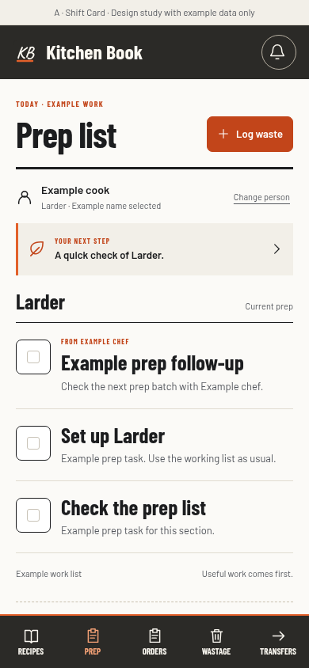
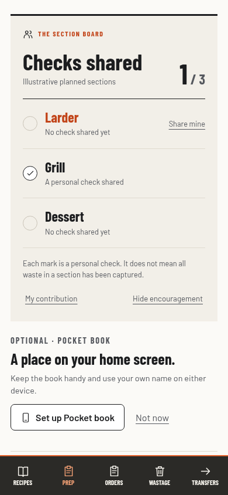
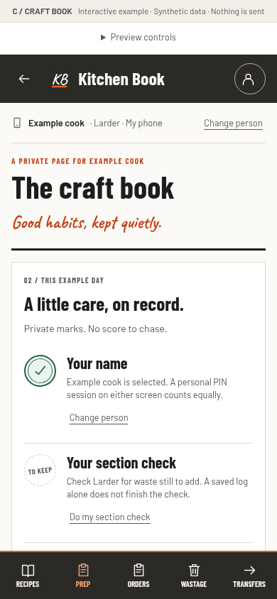

A
Shift Card
RecommendedOne compact personal next step.
Expand it when you want more.

Shown: default Prep view. The small strip opens a personal check and quiet progress marks on request.
Leichhardt Kitchen Book / staff design study
Useful waste records. Your own name. Work stays in the foreground.
A little recognition.
A little less friction.
One compact personal next step.
Expand it when you want more.

A cooperative section check board.
Shared purpose, no individual ranking.

A private page of useful habits.
Opened only when you want it.
